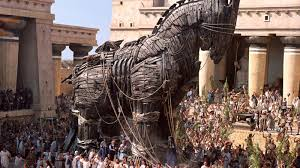
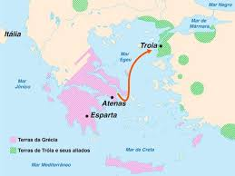
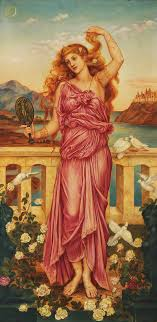
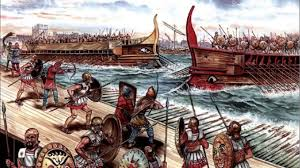
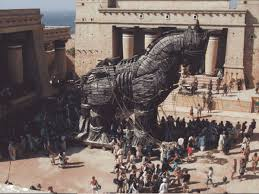
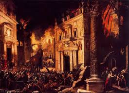

A Guerra de Troia
Guerra de Troia, durante muito tempo, foi considerada um mito. Porém, no século 19, um historiador acabou por
encontrar um sítio arqueológico, que depois de um teste, mostrou que era da mesma época da Ilíada. Este sítio arqueológico
se encontra na atual Turquia. O que vocês verão a seguir é um resumo do que consta na Ilíada. Por isso, com certeza haverá
um certo exagero nas batalhas, sem falar nos deuses e deusas.

O que era Troia?
Troia surgiu por volta do terceiro milênio antes de cristo, na Ásia menor, localizada hoje na Turquia. Era uma cidade
próspera e fortificada, conhecida por sua posição estratégica no comércio marítimo entre o Mar Egeu e o Mar Negro.
Sua ecônomia era boa devido ao seu papel como ponto de trânsito para o comércio marítimo no Mediterrâneo oriental.
A cidade se beneficiava do comércio de bens diversos, incluindo metais, tecidos e alimentos. A atividade econômica
de Troia era essencialmente baseada no comércio e na coleta de tributos de navios que passavam por suas águas.

Motivo da Guerra
Essa parte mais uma vez, houve alguns exageros. No que diz a Ilíada, o rei de Troia, Príamo, tinha dois filhos, Heitor
Páris. Páris, em um evento, teve que escolher qual das deusas era mais bela, Afrodite, Hera e Atena. Por escolher Afrodite,
esta prometeu-lhe como recompensa a mulher mais bonita da época.
Enquanto visitava Esparta, hóspede de Menelau, Páris encontrou e se apaixonou por Helena, a esposa de Menelau. Se apaixonou tanto por ela que
decidiu raptá-la, levando-a de volta a Troia. Esse ato desonrou Menelau, que pediu ajuda e provocou uma reação enérgica dos gregos, levando à
formação da coalizão que sitiou Troia por dez anos.

Reinos Envolvidos
A guerra foi travada entre a Grécia e Troia. A grécia naquele tempo, era um conjunto de reinos unidos por um Rei Agamêmnom.
Aqui está todos os reinos que comporam a Grécia:
Esparta - Governada por Menelau.
Micenas - Governada por Agamêmnon, irmão de Meneleu.
Ítaca - Governada por Ulisses, ou Odisseu, conhecido or ser o mais inteligente dos reis.
Argos - Outro reino grego importante.
Tebe - Aliado dos gregos.
Fócios - Reino que enviou tropas.
Tessália - Região que contribuiu com guerreiros.
Acaláia - Também participou da aliança grega.
Megalópolis - Enviou soldados para a guerra.
A Guerra
Meneleu, enfurecido, clamou ajudo para seu irmão, Agamêmnon, rei da Grécia.
Agamêmnon então, juntou um exército gigantesco e partiu para Troia. O desembarque dos gregos nas prais troianas foi um massacre, os gregos estavam em um número incrivelmente maior. Agamêmnon, já pensando que a guerra acabaria em alguns dias, mandou imediatamente os gregos atacarem a cidade de Troia.
Porém, os troiaos, se reagruparam e defenderam bem a cidade, tendo a muralha em volta da cidade como uma vantagem. O ataque perdeu o ímpieto, e os gregos, arrasados foram forçados a recuar.
E assim a guerra continuou por 10 anos. Grandes momentos de heroísmo ocorreram, a maioria pelo grande herói mitológico Aquiles, que era imortal, em todo o corpo, exceto por um ponto no tornozelo. No último ano de guerra, Aquiles luta e derrota Heitor, o guerreiro mais forte de Troia., os gregos comemoram e começam uma envestida feroz contra troia, que parecia prestes a cair, com os soldados tristes e sem esperança.
Porém, Páris, que tinha muitas vezes fugido das batalhas que ele mesmo causará sente remorso pelo irmão morto, e rezando a Apolo, o deus do sol e dos arcos, acerta uma flecha em Aquiles no tornozelo, matando-o. Troia, agora mais motivada e clamando pelo sangue de Heitor, consegue repelir mais uma vez os gregos, que olhavam incrédulos para o corpo de Aquiles.

O Cavalo de Troia
Após a queda de Aquiles, os gregos perceberam que seu grande exército estava tão pequeno, comparado ao inico da guerra, que resolveram usar alguma estratégia diferente, invés de simplismente atacar a cidade. Ulisses, grande amigo de Aquiles, criou um plano extremamente bom, e Agamêmnon após ouvi-lo, botou os seus construtores para trabalhar
Em uma bela manhã, os troianos encontraram um belo cavalo de madeira, com 10 a 15 metros de altura. Havia um bilhete preso no cavalo, em que dizia que os gregos haviam se cansado da guerra, e como presente pelo fim dessas guerras sangrentas, eles lhe dariam aquele cavalo de presente.
Os troianos comemoraram, gritaram e berraram de felicidade, imediatamente trouxeram o cavalo para dentro da cidade, para dentro da muralha. Desfilaram o dia inteiro, o rei de Troia, Príamo, chorou naquele dia, pensando em seu filho Heitor
A noite, porém, enquanto todos dormiam, gregos saíram de dentro do cavalo e abriram as muralhas da cidade. Assim, o exército grego escondido, adentrou na cidade, dando inicio a queda de Troia.

A Queda de Troia
Troia não teve chance, uma vez que os gregos transpuseram as muralhas, foi uma questão de quem tinham mais soldados. Por acontecimentos anteriores, os troianos mataram sem saber um importante profeta grego. Isso deixou Apolo contra os Troianos. E Ulisses, despejando seu desejo de vingança por Aquiles em uma flecha, alvejou Páris na cabeça. Com a morte de Páris, os troianos simplismente não tinham mais pelo que lutar, e sem isso, foram massacrados pelos gregos, que queimaram a cidade, mataram o rei, crianças, e os homens da cidade, e escravizaram as mulheres. Assim foi a queda de Troia, a cidade que aguentou 10 anos, um exército, 15 vezes maior.
